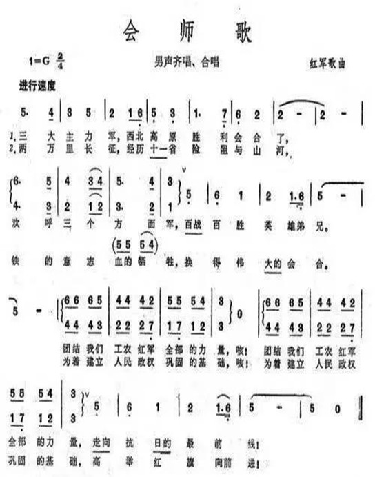

《会师歌》：又名《三大主力红军会师歌》、《三大主力会师歌》，歌曲源自陆定一创作于宝兴的《红军两大主力会合歌》。该歌曲在1964年的大型音乐舞蹈史诗《东方红》为“男声齐唱、合唱”，位于第三场《万水千山》。
1936年7月，红二、四方面军广大指战员在同张国焘分裂党和红军的错误不断斗争的同时，强烈要求北上与党中央会合，张国焘在分裂活动不得人心的情况下，同意北上。红二、四方面军遂开始共同北上。两部在过草地后，先后发起了岷（州）洮（州）战役和成（县）徽（县）两（当）康（县）战役，控制了甘南广大地区，形成了与党中央和红一方面军会师的有利态势。
红军三大主力会师后，密切协同，于11月取得了十年土地革命战争最后一战－－山城堡战役的胜利，使陕甘革命根据地更加巩固，同时对逼迫蒋介石停止内战，共同抗日起了重要促进作用。